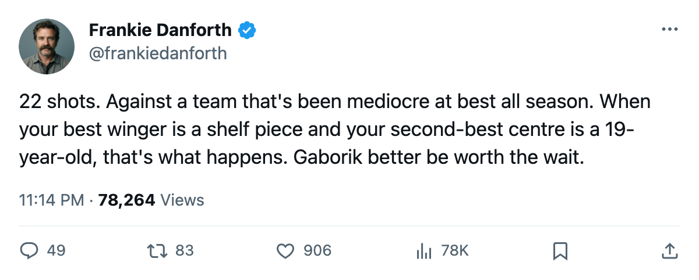
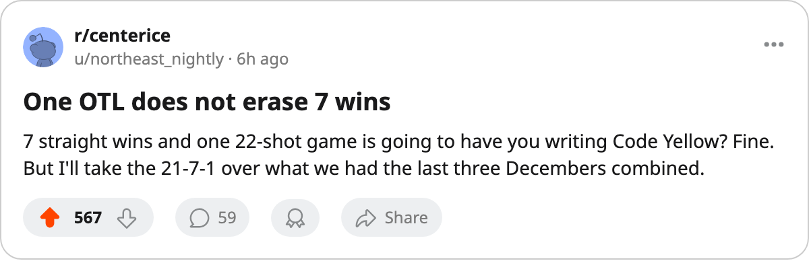

TOR
TORDANFORTH: Code Yellow, outshot by 14 in Tampa, and 5 days until the 99 is back
The 7-game streak died on a night Toronto managed 22 shots against 36. The formula says fix it from the top down.
 Frankie DanforthColumnist · Queen City Telegram
Frankie DanforthColumnist · Queen City Telegram
Code Yellow

The piece
The  Tampa Bay Lightning game on Saturday was the first loss in 8 nights, and it came the way I keep warning you it would. Toronto got outshot 22 to 36. Twenty-two. Against a Tampa Bay club that sits 9-5 at home and 14-10-5 overall. You do not win many of those. You need the overtime wins and we did not get one.
Tampa Bay Lightning game on Saturday was the first loss in 8 nights, and it came the way I keep warning you it would. Toronto got outshot 22 to 36. Twenty-two. Against a Tampa Bay club that sits 9-5 at home and 14-10-5 overall. You do not win many of those. You need the overtime wins and we did not get one.
The streak was 7 games. It ran from Tampa Bay Lightning on 2005-12-03 through  Florida Panthers on 2005-12-18, and in those 7 wins the team scored 31 goals. Six of them had 4 or more. The one that did not was 3-1 against
Florida Panthers on 2005-12-18, and in those 7 wins the team scored 31 goals. Six of them had 4 or more. The one that did not was 3-1 against  Pittsburgh Penguins on 2005-12-10, where
Pittsburgh Penguins on 2005-12-10, where  Roberto Luongo95 held them to one. Every other win had the 4. The OTL had 3. The formula held for 6 of 7, and it broke at exactly 3 goals, one short, in overtime. It is one game.
Roberto Luongo95 held them to one. Every other win had the 4. The OTL had 3. The formula held for 6 of 7, and it broke at exactly 3 goals, one short, in overtime. It is one game.
What bothers me is the 22. Not the loss. Twenty-two shots means Tampa had the puck and controlled where it went, and our guys chased. A team that scores 113 in 33 games should not be chasing at Tampa Bay. The shots-against number, 36, tells you where the game was played. Their half of the ice. Most of the night.
The hope arrives in 5 days.  Marian Gaborik99 comes back on 2005-12-25 with a 99 overall, the highest grade on the Bureau's Book, and a +11 on the Development Index. He has played 17 games, scored 6 goals and 2 assists, and logged 22.6 minutes a night while out of the lineup long enough that this team built a 7-game streak without him. The leg injury started between 2005-11-16 and 2005-11-17. He has missed 16 games. In 17 he was on pace to crack 30 goals if he played 82. That number is why I keep saying this team needs a 4-goal night to win, because when your best winger is gone, the math gets thin fast.
Marian Gaborik99 comes back on 2005-12-25 with a 99 overall, the highest grade on the Bureau's Book, and a +11 on the Development Index. He has played 17 games, scored 6 goals and 2 assists, and logged 22.6 minutes a night while out of the lineup long enough that this team built a 7-game streak without him. The leg injury started between 2005-11-16 and 2005-11-17. He has missed 16 games. In 17 he was on pace to crack 30 goals if he played 82. That number is why I keep saying this team needs a 4-goal night to win, because when your best winger is gone, the math gets thin fast.
 Mats Sundin92 has 24 points in 33 games. Petr Chlup87 has 26. Both carry the team. That is not a criticism, it is arithmetic. When Gaborik sits, the point production drops into two men, and those two men have a bad night, and 22 shots come out of it. You saw it.
Mats Sundin92 has 24 points in 33 games. Petr Chlup87 has 26. Both carry the team. That is not a criticism, it is arithmetic. When Gaborik sits, the point production drops into two men, and those two men have a bad night, and 22 shots come out of it. You saw it.
Tomorrow  St. Louis Blues arrives. They are 20-6-4 with 46 points, 13-5 on the road, and this is the first meeting of the season between these clubs. They will not hand Toronto the puck. If the 4-goal formula needs to restart immediately, the man who carries a 99 grade has 5 more days on the shelf. That is what I have.
St. Louis Blues arrives. They are 20-6-4 with 46 points, 13-5 on the road, and this is the first meeting of the season between these clubs. They will not hand Toronto the puck. If the 4-goal formula needs to restart immediately, the man who carries a 99 grade has 5 more days on the shelf. That is what I have.
The Panic Meter
Yellow. A 21-7-1 record does not go Orange on one OTL. But 22 shots is a signal, and the signal says: when the top winger is hurt and the shot attempt drops below 25, this team is a coin flip against anyone decent. That has been true all season and I printed it in November. The only fix walks in on Friday.

